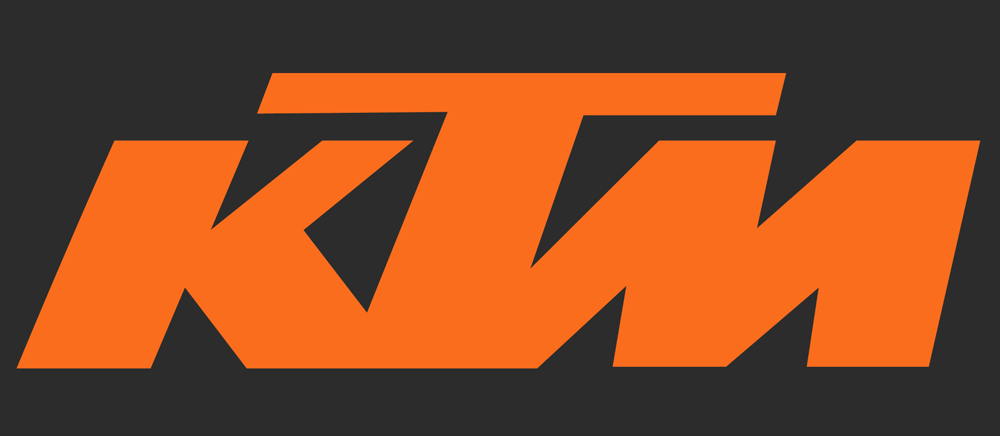

KTM MOTORCYCLE'S
Dis: Nizamabad Area: Mubarak Nagar Pin: 503003

KTM 790Duke (Booking's are open)
AboutKTM
ModelDetails
Location
YourSafety
The KTM motorcycle company was actually started in 1934.The KTM Motorcycle company is best known for their off-road racing bikes and they’ve established a reputation for building fast and agile bikes that are used to win titles.. KTM deserves a closer look and we’ve discovered 20 interesting facts about them that we thought you’d like to know.
When you look back through the history of KTM racing, it’s impressive that the very first bike that was released by the company had taken a championship title within just one year of its release. In 1954, the KTM took the Austrian 125 national championship. This was only the beginning. Two years later Egon Dornauer used a KTM to earn a gold medal and its legacy of competition racing was established. KTM would move forward with a focus on the production of racing bikes with their technology geared towards this end.
It had taken years of dedication and putting their time in the trenches as a small company that struggled to stay ahead. They had not yet realized their full potential, but by 1971, the company was showing remarkable growth and progress. The company employed a total of 400 workers and they offered 42 different models of production bikes and scooters which were being sold to the public. They had achieved a major milestone in their progress towards becoming a serious player in the global motorcycle manufacturing industry.